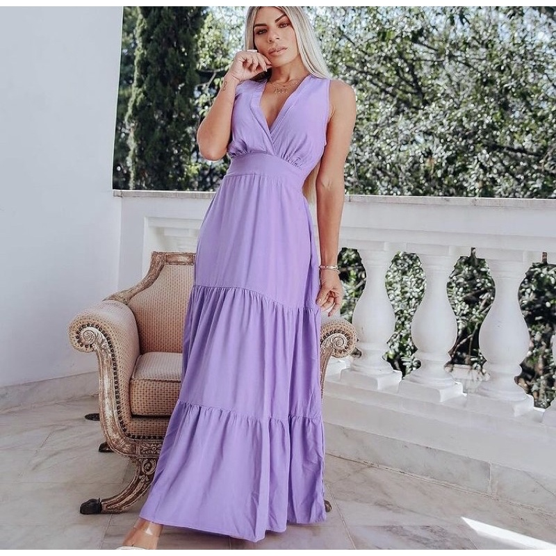

O significado da cor lilás é a purificação
mental e física, além disso, a tonalidade também
simboliza respeito, dignidade, sinceridade e
espiritualidade. A cor lilás é ideal para criar
uma atmosfera serena e intimista na decoração,
pois representa mistério e elevação espiritual.
